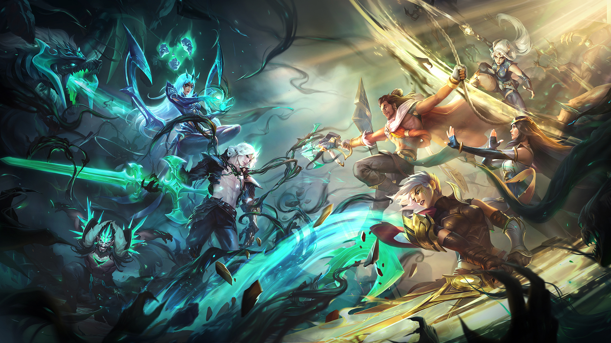
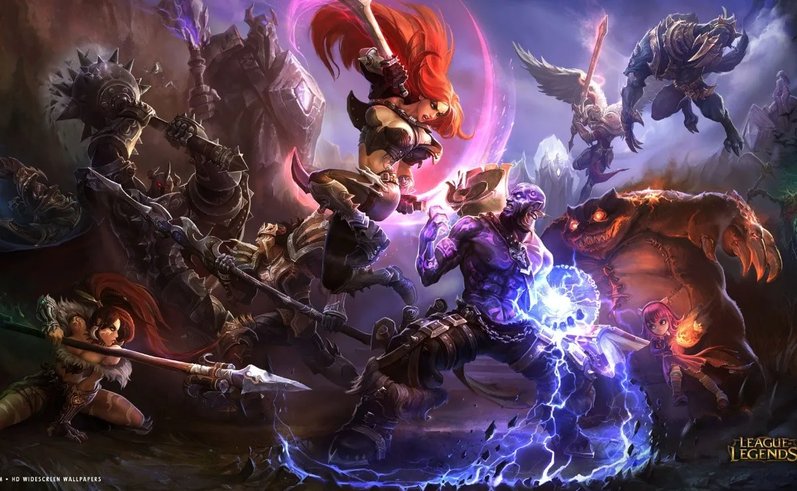
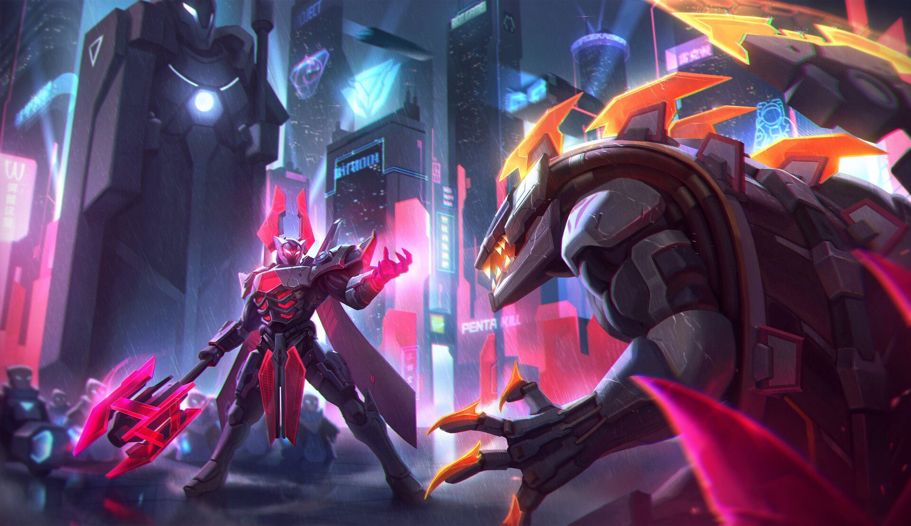

La historia de Runaterra
El mundo de League of Legends se llama Runaterra, y está lleno de personajes y lugares fascinantes. Desde la mágica ciudad de Piltover hasta la oscura y peligrosa Noxus, cada región tiene su propia historia y cultura.
Los campeones también tienen historias únicas y a menudo complicadas. Desde el misterioso y enigmático Yasuo hasta la valiente y leal Senna, cada campeón tiene su propia personalidad y motivaciones.
Los eventos y la trama
Además de las historias individuales de los campeones y las regiones, League of Legends también tiene una trama general en constante evolución. A través de eventos como el Despertar de los Aspectos y la Guerra de las Fronteras, los jugadores pueden explorar la historia de Runaterra y conocer los peligros que acechan en el horizonte.
En estos eventos, los jugadores pueden obtener objetos exclusivos, explorar nuevas mecánicas de juego y descubrir más sobre el mundo de League of Legends.
La niebla negra y los sentinelas

La historia comienza con el regreso de Viego, el Rey Arruinado, un antiguo gobernante que ha despertado de su letargo y busca recuperar su antiguo poder. Viego ha estado recolectando fragmentos de una espada legendaria conocida como la Espada de los Reyes, que se dice que es capaz de controlar a los reyes y dioses del mundo.
Los Sentinelas de la Luz, liderados por la guerrera mágica Senna, se dan cuenta de la amenaza que representa Viego y deciden detenerlo antes de que pueda recuperar toda la Espada de los Reyes. Para ello, reclutan a varios campeones del juego, incluyendo a Lucian, Vayne y Akshan, y trabajan juntos para frustrar los planes de Viego.
A medida que la historia avanza, se revela que la Espada de los Reyes no es solo una espada, sino un ser vivo con su propia conciencia. La espada se une a los Sentinelas de la Luz en su lucha contra Viego, y les brinda poderes para enfrentar a sus enemigos.
Finalmente, los Sentinelas de la Luz y sus aliados logran derrotar a Viego y destruir la Espada de los Reyes, salvando al mundo de su amenaza. Sin embargo, la historia termina con la revelación de que la destrucción de la espada podría tener consecuencias impredecibles, lo que sugiere que la historia de los Sentinelas de la Luz no ha terminado aún.
ALgunos otros eventos importantes en la historia de league of legeds son:

1-La Guerra Rúnica: Una guerra catastrófica que tuvo lugar hace siglos y que enfrentó a dos poderosas naciones, Demacia y Noxus. La guerra dejó el mundo devastado y es la causa de muchas de las tensiones actuales entre las dos naciones.
2-La historia de Demacia: Demacia es una nación justa y noble que valora la ley y el orden por encima de todo. La historia de Demacia está fuertemente influenciada por la figura del guerrero y paladín Jarvan III, quien lideró a su nación en la Guerra Rúnica y fundó la ciudad de Demacia.
3-La historia de Noxus: Noxus es una nación brutal y conquistadora que cree que solo los fuertes merecen sobrevivir. La historia de Noxus está fuertemente influenciada por la figura del General Boram Darkwill, quien lideró a su nación en la Guerra Rúnica y sentó las bases de la sociedad noxiana actual.
4-La historia de Ionía: Ionía es una nación pacífica y espiritual que valora la armonía y la naturaleza. La historia de Ionía está fuertemente influenciada por la figura de la ninja asesina, Karma, quien lideró a su nación en la defensa contra la invasión de Noxus.
5-La historia de Zaun y Piltover: Zaun es una ciudad subterránea, oscura y peligrosa, mientras que Piltover es una ciudad tecnológica y avanzada. La historia de ambas ciudades está entrelazada, ya que comparten una historia y una cultura común, a pesar de sus diferencias.
6-La historia de los campeones: Cada campeón de League of Legends tiene su propia historia única que lo conecta con el mundo de Runaterra y los eventos importantes que han sucedido. Algunos de los campeones más importantes en términos de historia incluyen a Ashe, quien es la líder de la tribu de los Avarosan en el norte de Freljord, y a Yasuo, quien es un espadachín ronin que busca venganza por un crimen que no cometió.
Algunas Historias Alternativas Relevantes

1-"Star Guardian": En este universo, los campeones son estudiantes de una escuela mágica que se transforman en guerreros espaciales conocidos como los Guardianes Estelares. Juntos, luchan contra la oscuridad que amenaza su mundo.
2-"Arcadia": En este universo, los campeones son habitantes de una aldea mágica que luchan contra la corrupción que amenaza su hogar. La historia se centra en el vínculo entre dos amigos, Yasuo y Riven, que se ven obligados a enfrentarse en una lucha por el futuro de su pueblo.
3-"Odyssey": En este universo, los campeones son miembros de una tripulación espacial que luchan contra una amenaza alienígena conocida como los Carceleros. La historia se centra en la capitana Jinx y su tripulación, que deben encontrar una manera de detener a los Carceleros antes de que destruyan el universo.
4-"Pentakill": En este universo, los campeones son miembros de una banda de metal llamada Pentakill. La historia sigue a los miembros de la banda mientras luchan contra fuerzas oscuras que buscan controlar su música y utilizarla para sus propios fines.
5-"PROJECT": En este universo, los campeones son guerreros cibernéticos que luchan en una distopía futurista. La historia se centra en Yasuo, un guerrero que lucha por la libertad contra un régimen opresivo.